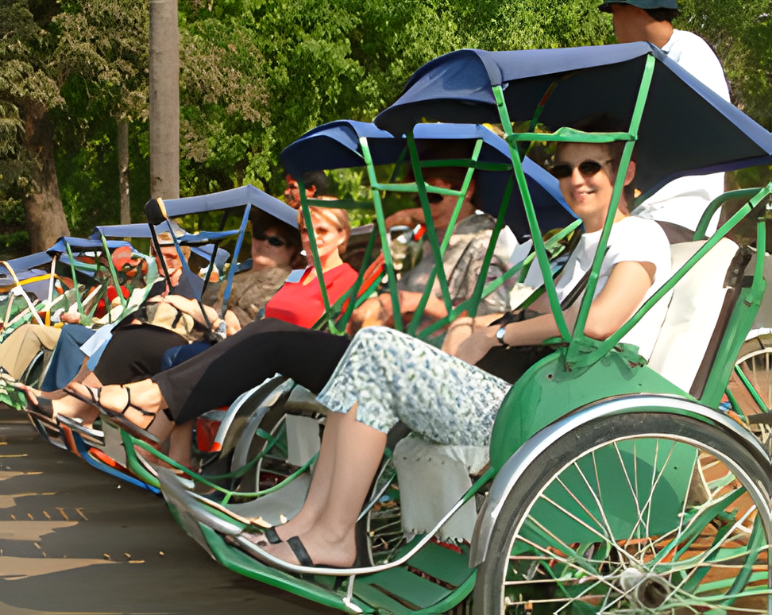

Home Page
Cultural Transportation

Cyclo
Introduction
Around 1950s-1960s Cyclo is the no.1 transportation in Cambodia!!
All the way till now Cyclo still lives around the main capital
Phnom Penh
though today Cyclo has declining dramatically throught newer transportations
which decaying our awareness of our cultural inharitance and possibly be forgotten.
Past Cultures Build Future